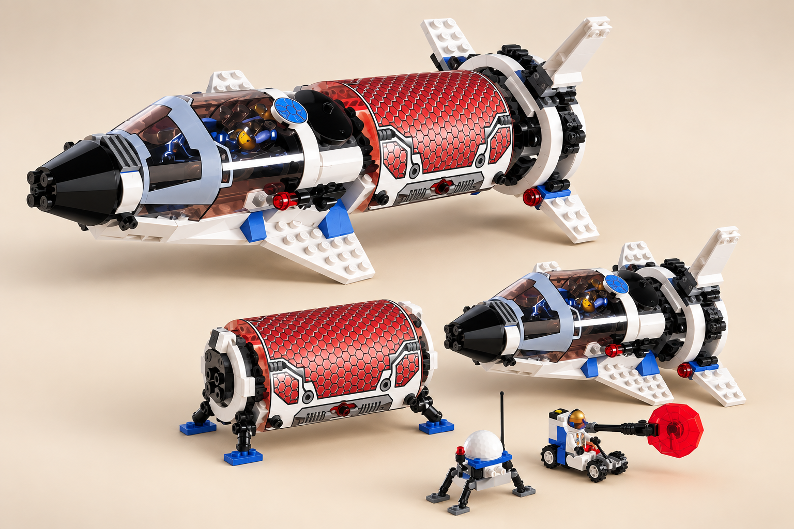
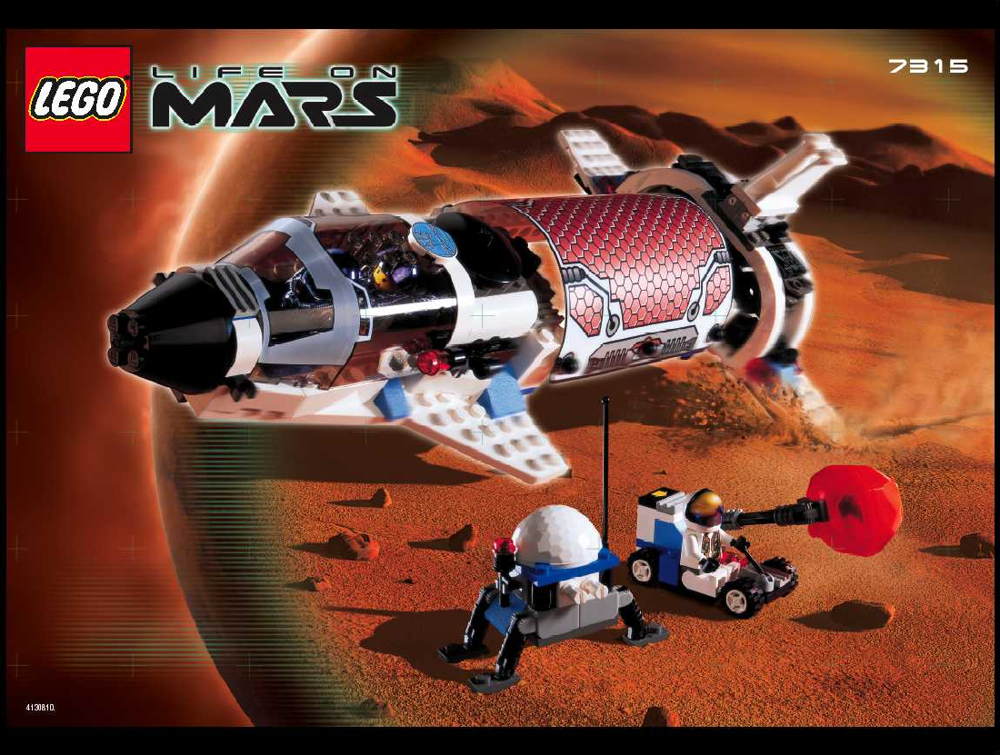

Production Design Target
ЦІЛИЙ КОРАБЕЛЬ → РОЗГОРНУТИЙ СТАН · ігрова адаптація

Завершений корабель; rover та обладнання — окремо
Видимі адаптації
- Центральна solar/lab секція відділяється та стає польовою лабораторією.
- Носова й rear/engine секції стикуються в коротшу форму корабля.
- Під лабораторним модулем — короткі опори; коліс і рейок немає.
Затверджене рішення
- Довгий силует, пропорції та біло-синьо-сіра айдентика LEGO 7315.
- Центральна стільникова solar/lab секція відділяється як Forward Service.
- Ніс і двигун стикуються осьово; опори лабораторії без колісного носія.
Технічні деталі
Stable ID:
unit.astronauts.solar_explorer · Маніфест: джерело й хеші · Перевірка: targeted design-package · Git: codex/m85-t083. Старий v1 із колесами відхилено й збережено як історію. Виробнича модель, її посадка та ігрова реалізація залишаються поза цим рев’ю. T084 не розпочато.